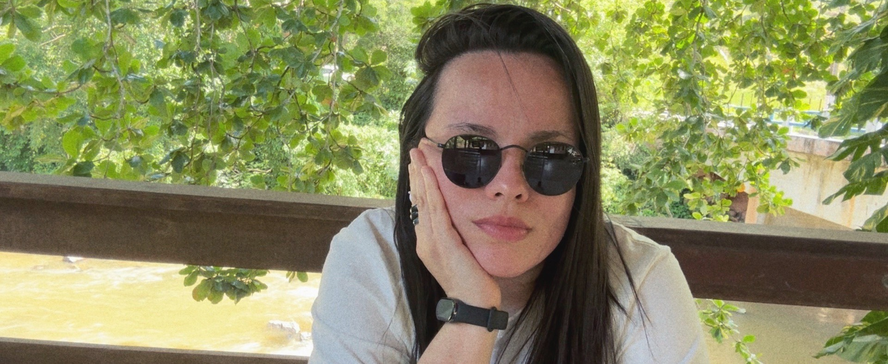

<div class="align-items-center default-container">
    <div class="col-lg-8">
        <div class="content">
            <div class="content-left">
                <h2 class="default-topic">About me.</h2>
                <p class="default-p">
                    My name is Barbara Calderon, and I enjoy <span class="default-highlight">creating software out of an idea</span>.
                </p>
                <p>
                    
                </p>
                <p class="default-p">
                    I am a Software Developer from Brazil. Portuguese is my native language, and I am fluent in English. 
                </p>
                <p class="default-p">My interest in software development started back in 2018 when I had to capture, clean, and 
                    analyze thousands of data points for my Master's Thesis in International Political Economy. Solving problems 
                    through code introduced me to the world of <span class="default-highlight">programming</span>, 
                    <span class="default-highlight">logic</span>, and <span class="default-highlight">automation</span>. 
                    The following year, I returned to college to study computer science and landed my 
                    <span class="default-highlight">first job in the tech industry</span>.
                </p>
                <p class="default-p">
                    Fast-forward to today, and I've had the privilege of working with amazing people in the tech industry.
                </p>
                <p class="default-p">
                    I've had the chance to work with a range of <span class="default-highlight">technologies</span> and developed valuable 
                    <span class="default-highlight">soft skills</span>, including leading transformative changes to improve 
                    team dynamics and organizational culture within a tech company. My technical knowledge has expanded 
                    through hands-on collaboration with developers and rigorous study of documentation. Over time, I've gained experience 
                    with programming logic, refined software craftsmanship, contributed to the development of 
                    <span class="default-highlight">websites</span> and built <span class="default-highlight">REST APIs</span>, 
                    collaborated on building visual dashboards, <span class="default-highlight">scrapers</span>, 
                    <span class="default-highlight">crawlers</span>, and participated in retrieving and processing data 
                    from various sources.
                </p>
                <p class="default-p">
                    I've worked with teams to adopt <span class="default-highlight">microservices architectures</span> using tools like
                    <span class="default-highlight">Docker</span>, <span class="default-highlight">Kubernetes</span>, <span class="default-highlight">Rancher</span>, 
                    and <span class="default-highlight">ArgoCD</span>. I've also been part of efforts to develop and maintain asynchronous systems 
                    with <span class="default-highlight">RabbitMQ</span> and optimizing CI/CD pipelines mainly using 
                    <span class="default-highlight">Azure DevOps</span> and YAML configurations.
                </p>
                <p class="default-p">
                    I do think <span class="default-highlight">DevOps</span> plays such an important role in enhancing 
                    <span class="default-highlight">collaboration</span> between <span class="default-highlight">development</span> 
                    and <span class="default-highlight">operations</span> teams because it <span class="default-highlight">streamlines</span> 
                    processes and improves the overall <span class="default-highlight">efficiency and quality of software delivery</span>. 
                    The optimization of workflows and reduction of system delays are significant factors for the success of project outcomes.
                </p>
                <p>
                    
                </p>
                <p class="default-p">
                    I have been involved in creating and managing <span class="default-highlight">PostgreSQL</span> 
                    databases, working on stream processing, and data pipelines. My work also involved handling secure authentication 
                    with <span class="default-highlight">OAuth2.0</span> and <span class="default-highlight">JWT</span>, 
                    as well as conducting User Acceptance Testing (UATs), performing manual testing, and writing user manual guides with  
                    <span class="default-highlight">LaTeX</span>. Furthermore, I developed end-to-end tests with 
                    <span class="default-highlight">Cypress</span> and assisted in monitoring applications using 
                    <span class="default-highlight">Prometheus</span>, <span class="default-highlight">Grafana</span>, 
                    and centralized logging systems.
                </p>
                <p class="default-p">
                    I have to tell you — I know you probably hear this a lot from other developers, but this much is true: 
                    my passion for technology goes far beyond work — <span class="default-highlight">I <em>am</em></span> 
                    the kind of person who finds joy in <span class="default-highlight">debugging tricky issues</span> 
                    and learning the intricacies of new frameworks just for fun. It's one of the reasons I pursued a 
                    Master's Degree — driven by sheer curiosity to <span class="default-highlight">turn the unknown into the known</span>.
                    I enjoy diving into documentation, 
                    exploring innovative solutions, and <span class="default-highlight">sharing knowledge</span> with my peers. 
                    Whether setting up a personal project to experiment with the latest tech stack or collaborating on a 
                    challenging problem, I'm motivated by curiosity and the thrill of continuous learning. This mindset fuels 
                    my technical growth and, I believe, helps contribute to a positive, dynamic team culture.
                </p>
                <p>
                    
                </p>
                <p class="default-p">
                    Now, we've covered the professional side. On a personal note, here are a few things about me: I'm passionate about  
                    <span class="default-highlight">documentaries</span>, <span class="default-highlight">purpose-driven organizations</span>,  
                    black coffee, captivating book stories, <span class="default-highlight">teamwork</span>,  
                    <span class="default-highlight">science fiction</span> and <span class="default-highlight">suspense</span> movies (they're the best!),  
                    pesto sauce, Linux, <span class="default-highlight">instrumental music</span>, physics and math, and the joy of community experiences. 
                    I wish I could tell you how much I love philosophy and the stories of explorers. When traveling, I enjoy documenting my 
                    <span class="default-highlight">whereabouts</span> and <span class="default-highlight">experiences</span>,  
                    so I can revisit them later.
                </p>                   
                <p class="default-p">
                    I am continuously learning and adapting to new technologies and methodologies. 
                    My goal is to create efficient, scalable, and user-friendly <span class="default-highlight">software solutions 
                    that make a difference</span>. Whether it's front-end development, back-end services, or full-stack applications, 
                    I am <span class="default-highlight">passionate about every aspect of software development</span>.
                </p>
                <p class="default-p">
                    Now that you've read this far, let me wrap this up with a final thought.
                </p>
                <p class="default-p">
                    Humankind is a species that constantly pushes the boundaries of technology. We are explorers at heart. 
                    I take great pleasure in contributing to our <span class="default-highlight">shared story</span> from the frontier of tech.
                </p>
            </div>
            <div class="content">
                <div class="content-left">
                    <h2 class="default-topic">Reach out.</h2>
                    <p class="default-p">
                        Follow me on social media, check out my GitHub account for projects, or <span class="default-highlight">reach out to arrange a meeting</span>.
                        I would be happy to discuss how my <span class="default-highlight">problem-solving skills</span> can help address the challenges you are facing.
                    </p>
                    <button>
                        <a routerLink="/contact" class="a-green">
                            > Contact me
                        </a>
                    </button>
                </div>
            </div>
        </div>
    </div>
</div>
